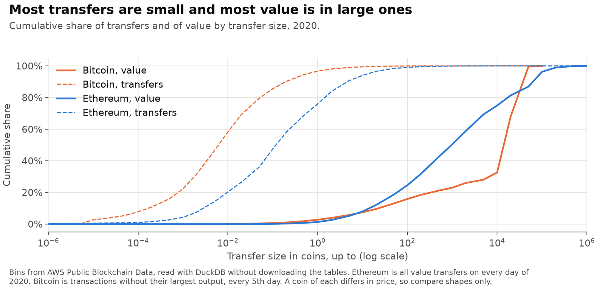

The welfare cost of Proof of Work: Bitcoin and Ethereum
Chiu and Koeppl built a model of how Proof-of-Work blockchains settle payments and used it to measure the welfare cost of Bitcoin. Buyers wait for confirmations so that double-spending does not pay, and miners spend about what they earn. I applied the same model to Ethereum while it still ran on Proof of Work, which had much shorter blocks, and compared the two coins on the same year, using transfer sizes measured from public chain data.
Personal project: my own analysis of publicly available data. It is not associated with my work for any current or past employer and does not represent their views.
At a glance
| Question | Answer |
|---|---|
| What did Proof of Work cost in 2020? | 0.74% of consumption for Bitcoin and 0.57% for Ethereum. |
| Where does the cost come from? | Mostly mining, which is close to miner revenue over transfer volume: 0.54% and 0.57%. The rest is waiting for confirmations. |
| Which costs less? | Ethereum in most checks, by a margin that rests on Bitcoin's largest transfers. |
| What do rewards and fees do? | Each point of fee share adds about a point of cost. Lower rewards help until waiting takes over. |
| What about later years? | Bitcoin cost 0.56% in 2025. The model does not cover Ethereum after the Merge. |
Welfare cost is the share of consumption people would give up to avoid the system's costs, compared with an ideal payment system.
The model
A day has as many short periods as it has blocks. A buyer who meets a seller chooses how much to pay and how many blocks to wait before the seller hands over the goods. Double-spending does not pay as long as the payment is no larger than N(N+1)R, where N is the wait in blocks and R the reward per block. Free entry means miners spend about what they earn, so the reward is a real cost. The distribution of transfer sizes pins down how much buyers value trade, and welfare follows from their choices.
With Chiu and Koeppl's Bitcoin 2015 inputs, my Python implementation gives their 1.43%. For Ethereum the inputs change: 6,480 blocks a day instead of 144, a discount of 0.97 a year spread over those blocks, issuance including uncle rewards, and its own volume, fees and transfer sizes.
Bitcoin and Ethereum in 2020

| 2020 | Bitcoin | Ethereum |
|---|---|---|
| Daily chance of a trade (sigma) | 0.0131 | 0.0279 |
| Annual supply growth | 2.49% | 4.56% |
| Fee share of transfer value | 0.030% | 0.134% |
| Welfare cost | 0.74% | 0.57% |
| Of which mining | 0.54% | 0.57% |
| Of which waiting for confirmations | 0.20% | 0.01% |
| Of which less trade from inflation and fees | 0.01% | under 0.01% |
| 95% range from resampling days | 0.73% to 0.75% | 0.57% to 0.58% |
| Value-weighted wait | 23 blocks, about 3.8 hours | 39 blocks, about 9 minutes |
Mining costs were about equal in 2020. Ethereum's lower total comes from waiting: its blocks are much shorter, so large transfers wait far less clock time even though they wait more blocks.
The year matters. Against Chiu and Koeppl's 2015 figure of 1.43%, Ethereum would look much cheaper, but Bitcoin's subsidy fell from 25 to 6.25 coins a block between 2015 and 2020.
How firm the comparison is

| Change from the baseline | Bitcoin | Ethereum |
|---|---|---|
| Baseline | 0.74% | 0.57% |
| Bitcoin on blockchain.com volume, Chiu and Koeppl's source | 1.01% | 0.57% |
| Bitcoin after the May 2020 halving only | 0.64% | 0.57% |
| Own on-chain volume for both | 0.56% | 0.41% |
| Bitcoin without transfers of 10,000 BTC or more | 0.63% | 0.57% |
| Bitcoin without transfers of 1,000 BTC or more | 0.58% | 0.57% |
| Ethereum top-level transactions only | 0.74% | 0.70% |
| Bitcoin on Chiu and Koeppl's 2015 transfer sizes | 0.57% | 0.57% |
| Annual discount 0.95 | 0.88% | 0.58% |
| Annual discount 0.99 | 0.61% | 0.57% |
Ethereum is lower in all but one row, and in two the coins are within 0.01 points. On the sampled days, 1,303 transfers of 10,000 BTC or more hold 67% of measured Bitcoin value. Many of them are probably large holders moving their own coins, not payments. Without Bitcoin's transfers of 1,000 BTC or more, the two are level. So Ethereum was somewhat cheaper in 2020, but the size of the gap is not settled.
Rewards, fees and later years

Each extra point of fee share adds about a point of cost, and paying the same reward through fees or new coins makes almost no difference. Lower rewards cut the cost until waiting takes over. Ethereum's low point flatters it, because the model leaves out network delays and the stale blocks that short blocks cause.

On blockchain.com's volume, the only measure still public for these years, Bitcoin's cost fell from 1.01% in 2020 to 0.56% in 2025. Further halvings help down to a subsidy of about 0.78 coins per block. Holding volume fixed over decades is a strong assumption.
The model does not apply to Ethereum after the Merge, because its double-spend limit and mining cost come from a hash race. I give only a rough range for 2025, 0.01% to 0.10%, which does not come from the model.
Transfer sizes

Transfer sizes come from AWS's public blockchain tables, read with DuckDB without downloading them and keeping only binned counts. Ethereum covers every day of 2020. Bitcoin's nested outputs are slow to read, so it uses every fifth day, and its payments are approximated as transactions without their largest output.
Limits
- Transfers are not all payments. Exchange movements and contract activity count as volume, and the result depends directly on how much of it does.
- Ethereum's volume counts ether only. Token transfers pay fees but their value isn't in the denominator, which overstates Ethereum's cost.
- Volume does not respond to rewards or fees, and prices do not move.
- Mining cost counts resources equal to miner revenue. It leaves out effects on anyone outside the model, such as emissions.
- Waiting cost scales with the model's utility shifter, which has no empirical anchor.
Data
Supply, issuance, fees, volume and counts from Coin Metrics community data; Bitcoin estimated transaction value from blockchain.com; transfer sizes from AWS Public Blockchain Data. Raw Coin Metrics files aren't redistributed. The model is from Chiu and Koeppl, "The Economics of Cryptocurrencies: Bitcoin and Beyond", Canadian Journal of Economics (2022). The Python implementation is my own.